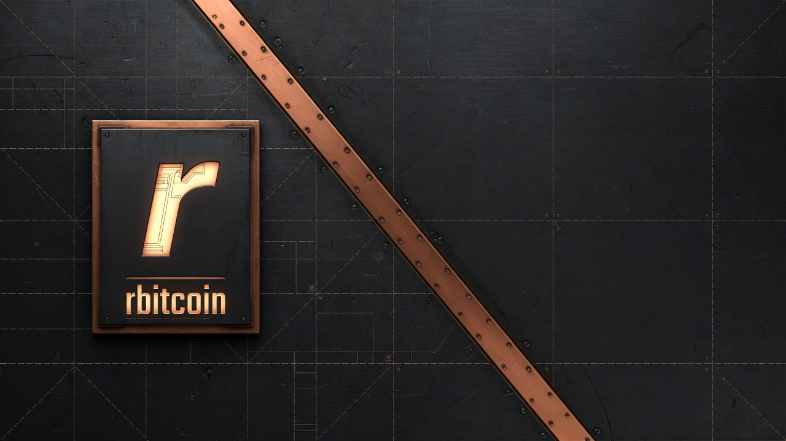

Relational archive, no UTXO database
Packed transactions, spend annotations, and a transaction index in map-free Class A/C tables. Confirm and mempool prevouts read the archive—not a mutable coins bag and not a multi‑GiB dbcache flush.
A validating peer with a compact relational archive—not a UTXO database—in one Linux-first binary. Electrum, Esplora, and a Core-class JSON-RPC subset are optional. Prefer signet until 1.0.

One binary and one archive: a validating node without a separate indexer process. Scripthash indexing is optional and billed as extra disk, not as a default.
Packed transactions, spend annotations, and a transaction index in map-free Class A/C tables. Confirm and mempool prevouts read the archive—not a mutable coins bag and not a multi‑GiB dbcache flush.
Electrum and optional Esplora live in-process. They need
--shindex—a selectable indexing cost (Class B scripthash,
extra disk). Off by default. Without it, those listeners refuse to start. Not a
graphical explorer.
Structure, connect, and script verification in-tree on rust-bitcoin. secp256k1 is the only crypto primitive—no libbitcoinconsensus dual-eval. Confirm is lookup → load → scripts → write.
A documented subset over HTTP (--rpc-listen, cookie or user/pass). Chain,
mempool, raw tx, and estimatesmartfee—not wallet, mining, or a UTXO-set
scanner. Prefer Electrum/Esplora with --shindex for script history.
Approximate figures from a real mainnet archive. The tip moves. These are order of magnitude, not a warranty.
Newer transactions resolve hottest in segmented tx.head. Portable static musl
builds run on ordinary Linux without a matching glibc.
Details on GitHub.
Aimed at operators who validate, store, and serve. The product is not a full Bitcoin Core replacement and not a pruned or desktop node.
Then consider mainnet, with monitoring. Format and APIs stay unstable until 1.0. Source and portable musl builds are on GitHub.